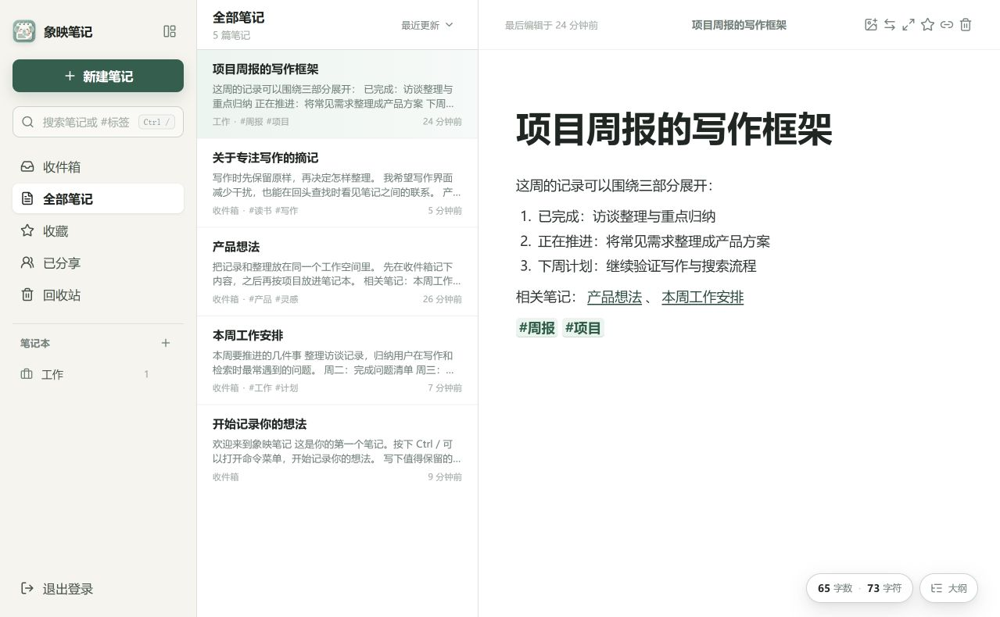
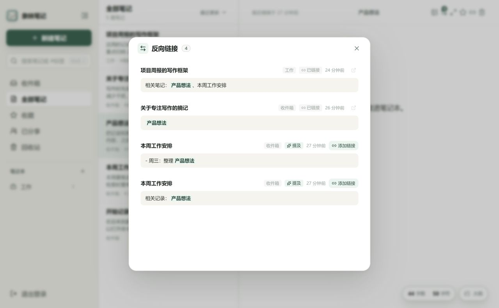
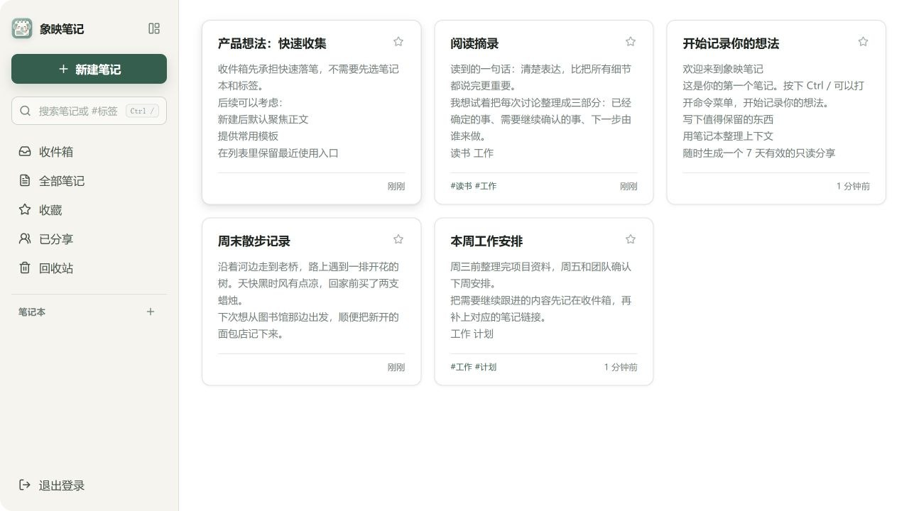

让想法有地方落脚
一款由你自己部署、以 Markdown 为基础的个人笔记应用。先记录，再整理，再找回来。
临时想起的事先放进收件箱。等有空时，再按主题整理、搜索和关联，不必一开始就决定归到哪里。

先写下来，再慢慢整理
灵感、会议记录、阅读摘录和待办都可以先写进收件箱。写作时专心把内容留下，分类和整理可以等之后再做。
熟悉的 Markdown，写起来像普通文档
标题、粗体、列表、任务清单、引用、代码块、链接和分隔线都能直接编辑。内容以 Markdown 保存，之后也方便带走。
-
修改后自动保存
编辑器会在内容变化后自动保存，并显示保存状态。正文下方可以查看字数和字符数，适合记短想法，也能逐步写成长文。
-
图片可以直接粘贴或拖入
从剪贴板粘贴图片，或把图片拖进正文；支持 JPEG、PNG、WebP 和 GIF。插入后可以调整显示宽度，导出笔记时附件也会一起打包。
-
需要专心时，收起周围内容
可以打开沉浸模式或打字机模式，减少写作时的干扰。正文大纲会列出 H1–H3 标题，点击标题即可跳到对应位置。
记下的内容，找得到，也连得起来
按项目、主题或生活场景建立笔记本，用标签标出关键内容。之后既可以通过分类缩小范围，也可以直接搜索标题和正文。
- 笔记本和标签：笔记本可以自选名称、图标和颜色；在正文写入
#读书、#工作等标签，就能按标签筛选。 - 日常入口与浏览方式：收件箱、全部笔记、收藏、已分享和回收站各有入口；列表可按更新时间、创建时间或标题排序，也能切换为卡片网格。
- 全文搜索：搜索标题与正文；要找当前笔记中的一段内容，也可以使用当前笔记查找。
- 双向链接：输入
[[笔记标题]]连接相关记录。目标笔记会列出反向链接，也会提示尚未建立链接的同名提及。 - 重命名同步：修改被引用笔记的标题时，已有链接会一并更新。
- 回收站：误删的笔记可以恢复；确认不再需要后，再永久删除。

窗口中的笔记标题和正文均为虚构演示内容。

截图中的笔记均为虚构演示数据。
把多篇笔记平铺开来
列表适合逐条查看，卡片网格则把多篇笔记并排呈现。浏览时能同时看到标题、摘要、标签和更新时间；需要继续写时，打开对应笔记即可编辑。
在电脑、平板和手机上打开
页面会根据屏幕宽度调整，也可以在浏览器支持时安装到主屏幕。外观可以选择浅色、深色或跟随系统。
在多个设备上登录同一个账号时，已打开的页面会收到笔记和笔记本变化通知，并刷新列表与内容。
正文同时在多台设备上编辑时，系统不会自动合并冲突内容。建议同一篇笔记同一时间只在一台设备上编辑。
运行在自己的电脑、服务器或 NAS 上
象映笔记面向个人使用，数据由你部署和管理：正文存放在服务所用的 SQLite 数据库里，图片附件保存在单独的数据目录中。项目提供 Docker 启动方式，也可以在安装 Bun 的电脑上运行。
开始之前，先了解这几件事
- 象映笔记目前按单人使用设计，没有公开注册和多人协作功能。
- 编辑时需要连接到你部署的服务，目前不支持断网编辑和稍后自动上传。
- 跨设备通知会帮助其他页面刷新内容，但不会合并同时发生的正文编辑。
- 分享链接是只读公开链接，有效期为 7 天，也可以提前撤销。